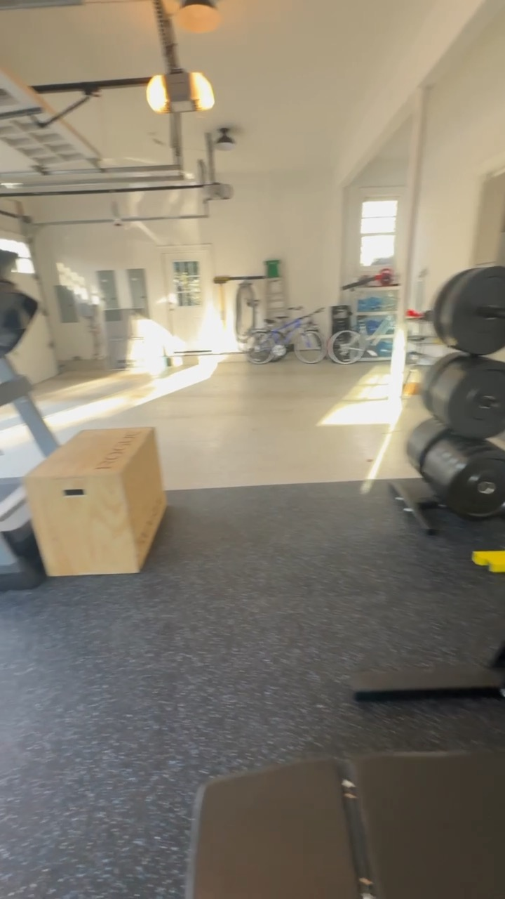
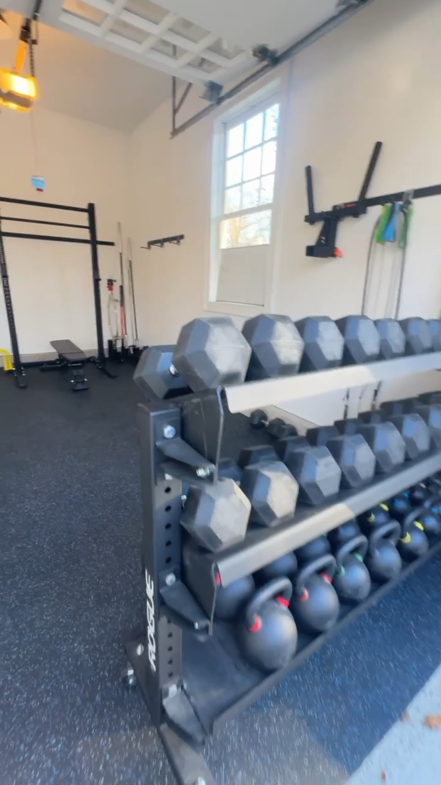

Layout in a garage setting
Make the most of the usable floor.
The photographs show the gym within an existing garage, where the overhead door system, windows, and mixed-use room conditions are part of the real setting. Cardio equipment and a strength rack sit alongside open floor area, while the rubber training surface defines the primary workout zone.
Views also show dumbbell and medicine-ball storage, a plyometric box, and the relationship between the training surface and the garage’s surrounding concrete floor. This is a completed home-gym example, not a luxury estate rendering.
Explore home gym planning and equipment layout or tell us about your space.
Oyster Bay Cove gym photos

